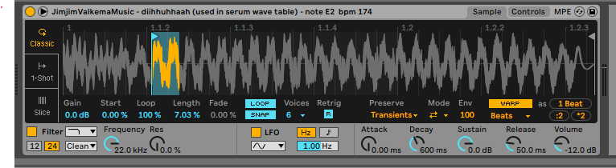

Granular Sampler Recipe
Requirements
A sampler with 'looping' controls, and a means to automate the starting marker and loop length
Steps
1. Using a sampler, set to 'loop mode', made the sampeler loop over an extremely short amount of time.
2. Then by automating the start time to 'comb' through the sample, you start to use granular synthesis over the sample.
